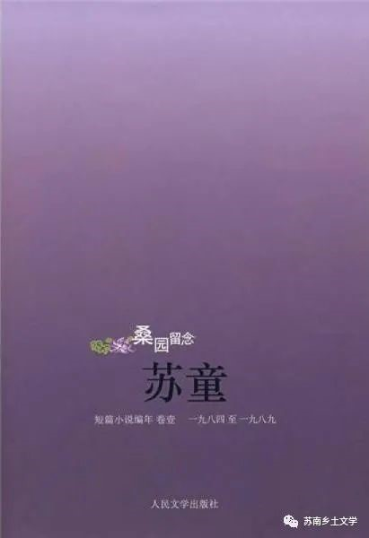
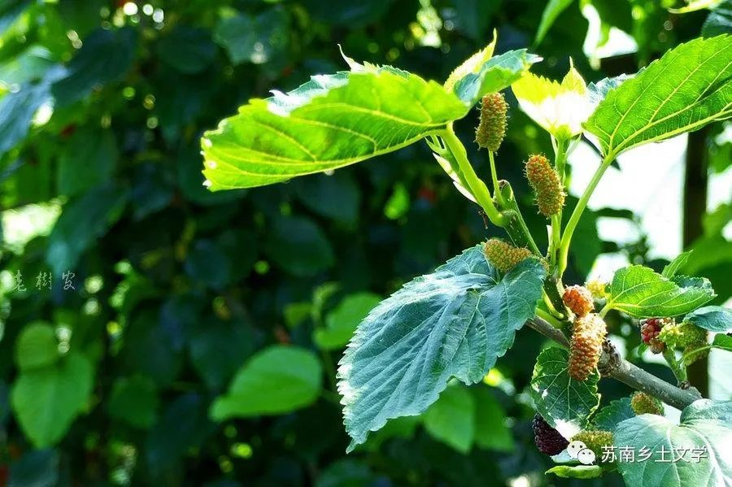
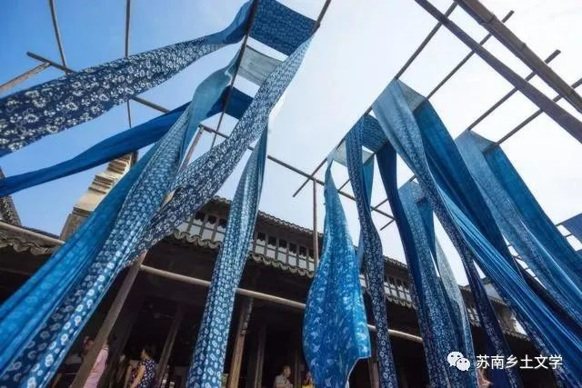
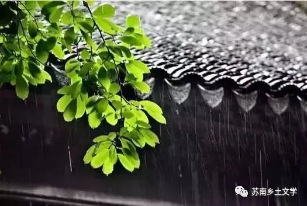

《桑园留念》《狂奔》
苏童
01作品简介
- 
《桑园留念》和《狂奔》是苏童的两本短篇小说集，《桑园留念》收录了1984-1989年期间的作品，《狂奔》收录了1990-1994年期间的作品。这两本小说集大体围绕“枫杨树故乡”和“香椿树街”来写作。
02 苏南特有风物
1.桑园、石桥、竹林、澡塘，桑园经济
到桑园去要路过一座石拱桥，我们那个城市有许多古老或者并不古老的石拱桥，傻乎乎地趴在内河上，但是，桑园却只有一个。
2.梅雨天气
在霏霏雨丝中他们走过湿漉漉的城市，看见环城河的水位涨了好几寸，城南低洼的老街上有水流汩汩地蔓延，那水是浊黄的，以前从来没见过。老街上的人穿着高帮胶鞋在积水里走路，鞋帮上溅了星星点点的黄泥，像各种花朵的形状。
- 
- 
3.染坊
梅雨季节里，染坊一家子天天等太阳，太阳升起好晒布，从缸里捞上来的蓝白花布已经多日未干了，每当五月的太阳即将刺透滑腻的空气，染坊里一片忙乱。
4.小脚粽、芦苇
挂在门楣上的粽叶已经发出了灰褐色。风飒飒地吹着那捆粽叶，很像是雨声。我们白羊湖一带的人都包“小脚粽”，祖母把雪白的糯米盛在四张粽叶里，窝成一只小脚的形状来，塞紧包好，扎上红红绿绿的花线。
- 
03象征性意象
1.《门》
门：留守女人的欲望
“我一点也不明白她的意思，她看着我笑，她站在门槛上把门一推一拉地玩。”又沉默了一会，老史微笑着说，“也许都是因为那个谜语。门。她就把门一推一拉地玩。
2.《飞跃我的枫杨树故乡》
（1）枫杨树故乡是作者以约克纳帕塔法世系为原型构建的精神故乡
（2） 罂粟：欲望的象征
（3） 野狗:乡村的野性和生命力
（4）河流：河流是主人公与祖先与故乡无法斩断的感情羁绊，它永远横亘在故乡与外部世界之间，是主人公飞越故乡过程中的屏障。
多少次我在梦中飞越遥远的枫杨树故乡。我看见自己每天在迫近一条横贯东西的浊黄色的河流。我涉过河流到左岸去。左岸红波浩荡的罂粟花地卷起龙首大风，挟起我闯入模糊的枫杨树故乡。
3.《桂花树之歌》
（1）桂花树——村庄传统的象征，世代敬重、守护的对象传统的逐渐消失
“山南，山南原先也有桂花树的，后来一棵也没了。”
（2）重新寻回传统
我花好多钱买你们的桂花，我花好多钱就是要买桂花，山南没有桂花了。
（3）“大风”意象：势不可挡的摧毁传统文化的力量
风真的在这一天来了。我看见竹寮的门和窗都被第一场大风粗暴地推开，桂花从树上地上纷纷扬扬旋起来，金星似地满天乱舞，扑打着我的眼睛。
4.《沿铁路行走一公里》
铁路：象征通往外部世界的途径，主人公因为死亡始终排斥铁路、回避铁路，但是铁路对他又充满诱惑。渴望与外部世界沟通、与现代文明发生联系，但是精神被囚禁。
是在那个炎热潮湿的夏季里，剑总是神思恍惚，在凭窗眺望不远处的铁道时，他的心也像天气一样炎热潮湿，是一种烦闷不安的心情，剑知道那是因为他克制了欲望的缘故。
04阅读感悟
苏童的乡土小说围绕“枫杨树故乡”和“香椿树街”展开，“枫杨树故乡”是苏童构建的“精神原乡”，而并非对他现实中故乡的直白描写。
他的小说中的“乡土因素”更多的是一种精神上的阐发，小说中大量使用象征性意象，例如在《飞跃我的枫杨树故乡》中“野狗”的意象体现了乡村的野性和张力；《沿铁路行走一公里》中“铁路”的意象象征着与外部世界沟通、与现代文明发生联系。
当然从苏童的小说中，我们仍然可以看到一些苏南意蕴的影子，就比如他对河流的描写，对桂花树、粽子、芦苇、蓝白染坊等具有江南特色的符号的书写和对温婉的苏南女性形象的刻画。
苏童通过一系列象征性意象的书写，反映了乡村传统与现代文明的矛盾、成年男性走出乡村后“留守者”们的生活境遇、外部世界和现代文明对乡村原住民的引诱以及现代城市工业文明对乡村污染等问题。